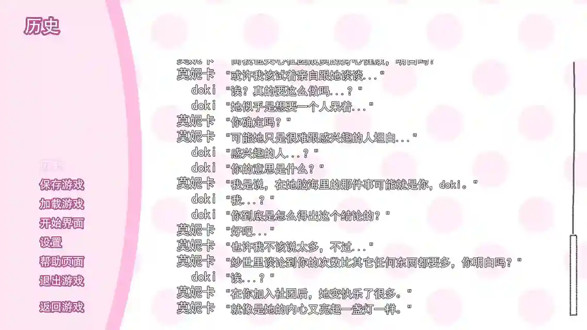

|2023-02-01|

警告！本文不适合儿童和心理承受能力较弱者阅读！
警告！本文对游戏有剧透，请确定已经至少通关一次后再进行阅读！
警告！本文同时提及了 弹丸论破初代 的部分剧情！
零
《心跳文学部》（心跳~心跳~文学部；Doki Doki Literature Club!，以下简称 ddlc），被打上「心理恐怖」标签的 Galgame，同时也是一款 Meta game。
壹
其实我很早就听说过 ddlc 的大名，并且已经在经典的桥段（删除 monika.chr）的地方被剧透。（真的很可惜……毕竟一辈子只有这一次体验——还好只有这一处） 。直到最近我才知道游戏本体是免费的，所以一直把主机当主力游戏平台的我才打开了尘封的 steam 账号。
贰
这是我第一次玩 Galgame，打上汉化补丁之后正常开始新游戏。起初我对游戏写诗系统有点不适应，在游戏第二天后， 我决定攻略纱世里——实在无法辜负青梅竹马的感情。
但是从第三天开始（因为多周目的缘故，我天数可能有点记串了，不过玩过的肯定看事件就知道我说的是哪天了） ，我们的部长同志就已经开始大展淫威——
（请忽略我不知道起什么名字就把游戏名字填上这档子事）
两天之后，那件事就发生了。
说实话，我当时并没有感到十分痛心。因为毕竟我经历过一次——弹丸论破初代，舞园沙耶香之死。
然后就是二周目，我真正知道了什么是「心理恐怖」。